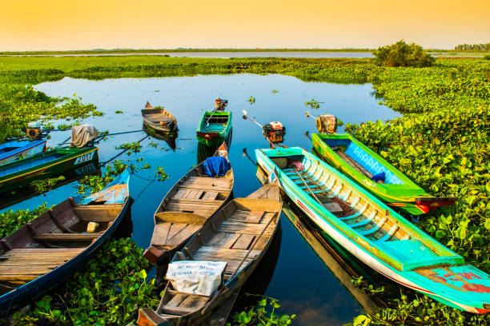

Tonlé Sap (/ˈtɒnleɪ sæp/; Khmer: ទន្លេសាប, Tônlé Sab [tɔnleː saːp]; lit. 'Fresh River' or commonly translated as 'Great Lake'; Vietnamese: Biển Hồ,[1] Chữ Hán: 湖海[2]/壺海[3]) is a lake in the northwest of Cambodia. It belongs to the Mekong River system. It is the largest freshwater lake in Southeast Asia and one of the most diverse and productive ecosystems in the world,[4] designated as a Biosphere Reserve by UNESCO in 1997 due to its high biodiversity.[5] Entering the 21st century, the lake and its surrounding ecosystems are under increasing pressure from deforestation, infrastructure development and climate change. Scenery of Tonle Sap Tonlé Sap Lake is located in the northwest of the lower Mekong plain, formed by the collision and collapse of the Indian Plate and the Eurasian Plate.[9] The lower Mekong plain used to be a bay, and the sea level rose rapidly at the end of the last glacial period. About 4.5 metres (15 ft) high, cores from this period found near Angkor contain tidal deposits, as well as salt marshes and mangrove swamp deposits,[10] deposited in caves about 7,900-7,300 years ago The sediments of Lake Sa also show signs of marine influence.[11] The current river morphology of the Mekong Delta was developed over the past 6,000 years,[12] while the remaining waters in the northwest corner of the lower Mekong plain formed the Tonlé Sap.[13] Southwest of the Tonlé Sap basin are the Cardamom Mountains, with heights of more than 1,700 metres (5,600 ft), and to the north are the Piandan Mountains with an average height of 500 metres (1,600 ft). The basin covers an area of 86,000 square kilometres (33,000 sq mi). The 120 kilometres (75 mi)-long Tonlé Sap River connects the Tonlé Sap Lake with the Mekong River and contributes 9% of the flow of the Mekong River.[8][14] The size and water volume of the lake varies greatly throughout the year, with a minimum area of about 2,500–3,000 square kilometres (970–1,160 sq mi) and a volume of about 1 cubic kilometre (0.24 cu mi) in the dry season,[15] and the water body expands in the rainy season, increasing the depth to 9–14 metres (30–46 ft).[16] The maximum area is 16,000 square kilometres (6,200 sq mi), and the volume is about 80 cubic kilometres (19 cu mi).[15] About 34% of the water in the Tonlé Sap comes from the rivers that enter the lake, about 53.5% from the Mekong River, and 12.5% from precipitation.[8] May to October is the rainy season in the lower Mekong plain, and November to March is the dry season. The annual rainfall is 1,000 to 4,000 millimetres (39 to 157 in). Almost all the precipitation is in the rainy season.[17] At the end of the dry season, the Tonlé Sap Lake is has a typical depth of 1 metre (3.3 ft). As the monsoon rain begins, the water level of the river begins to rise. As the water level continues to rise, the flow of the river reverses. The water level of the Tonlé Sap increases by about 10 metres (33 ft), the flow of the Mekong gradually decreases at the end of the rainy season, and the flow of the Tonlé Sap then reverses and began to replenish the flow of the Mekong.[18] The extreme hydrodynamic complexity of the Tonlé Sap Lake, both in time and space, makes it impossible to measure specific flow, and water level rather than velocity and volume determines the movement of water as it shapes the landscape.[15] 72% of the modern sediments deposited in the Tonlé Sap come from the Mekong River, while only 28% come from the catchments upstream of the lake.[13] Sediment-bound phosphorus acts as the basis of the food chain through phytoplankton, and internal nutrient cycling plays a crucial role in the productivity of the floodplain and, therefore, the long-term sustainability of the lake's entire ecosystem.
Tonle Sap Lake is Southeast Asia’s largest freshwater lake and it’s home to one of the world’s most diverse ecosystems. In and around the lake, there are a variety of wildlife species that helped to sustain and grow the ancient Khmer civilization. It’s also known for its unique local communities and floating villages. The massive lake in Siem Reap is 250 kilometers long and 100 kilometers wide at its widest point, giving it the appearance of an inland ocean because it is impossible to see the opposite shore from ground level. Surprisingly, it’s quite shallow, only reaching a maximum depth of 10 meters.
Tonle Sap Lake is better visited during the rainy season (June to October). The Tonle Sap River reverses its flow as a result of the Mekong’s water, which, when mixed with the excess water from upstream, allows the lake to rise to five times its original size during the dry season. The plains and trees that surround it flood, resulting in a complex and fertile ecosystem. It’s also when boat tours to Tonle Sap’s several floating villages can be arranged. From December to April is the perfect time to visit the bird sanctuaries.
Chong Khneas is the nearest and most open floating village on the lake’s edge to Siem Reap. Boat tours of Chong Khneas are available all day from the Chong Khneas boat docks if you want a pretty short and simple look at the Tonle Sap. It provides a lovely scene with homes, restaurants, and schools bobbing on the water during the rainy season.
Kampong Phluk is one of Tonle Sap Lake’s most famous floating villages. Since the houses are constructed on tall stilts, it isn’t exactly a ‘floating village.’ The village is high and dry during the dry season, with tall stilted houses lining the road. These stilts are underwater while the water level is high. You can also take boat trips into the flooded forest from here.
Since it is far from Siem Reap, it takes about 2 hours to get here by boat from the Phnom Krom boat landing. There is a floating village on the outside and a stilted village on the inside. Kampong Khleang has the largest population of all of the Tonle Sap Lake settlements, and due to its remote location, it attracts relatively few visitors. You also can reach there by Tuk-tuk or private vehicle and enjoy the rural life of Siem Reap countryside.
Mechrey is a small floating village in Tonle Sap, and it is the starting point for Tonle Sap Biosphere Reserve birdwatching tours at Prek Toal. Many threatened birds use this area as a breeding ground. A biosphere knowledge center and a water hyacinth weaving center are also available.